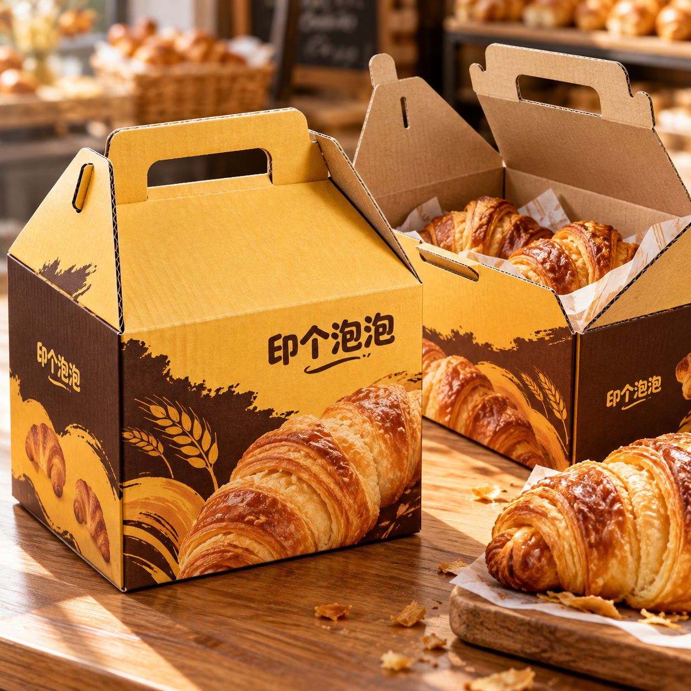

公司新闻
平台选型说明：瓦楞手提盒，先确认提拿方式再看外观
2026-10-12 · 印个泡泡
从提拿、装入和运输三个使用环节理解瓦楞手提盒的选型。
手提盒看起来可以直接拎走，但“有提手”并不能单独回答装入后是否适用。印个泡泡在线品类页提供瓦楞手提盒入口；这篇说明用于帮助梳理使用需求，不是新产品上市或承重测试公告。

平台维护方提供的包装设计场景素材，仅为用途和外观示意，不是实际客户交付或承重测试证据。
用途一：短距离携带
把实际内容物、装量与摆放方向告诉生产方。提拿时受力位置与空盒展示不同，需要用装填后的样品检查提手、闭合位置和内容物状态。不要从图片中的产品数量推断通用承重值。
用途二：零售展示或现场交付
确认正面信息是否容易看到、开合是否方便，以及交付时需不需要额外的保护或固定。喜欢的印刷图案可以作为设计参考，但不等于对应材料与工艺都已经确认。
用途三：配合快递运输
提手方便携带，不代表包装已经完成运输验证。若还需外箱、固定件或其他配套，应结合运输方式一起讨论；不要把手提盒的外观图当作运输性能报告。
准备需求时，可以分别写“怎么装”“谁来提”“怎样送”。三个问题有了具体答案，再到目标产品页核对可选尺寸、材料和工艺，通常比只问“做一个同样的盒子”更清楚。
本文为平台服务介绍。平台入口访问核对日期2026-10-12；实际可选条件以对应页面与生产方确认结果为准。
为你的产品，找到适合的包装。
选包装，获取报价 →